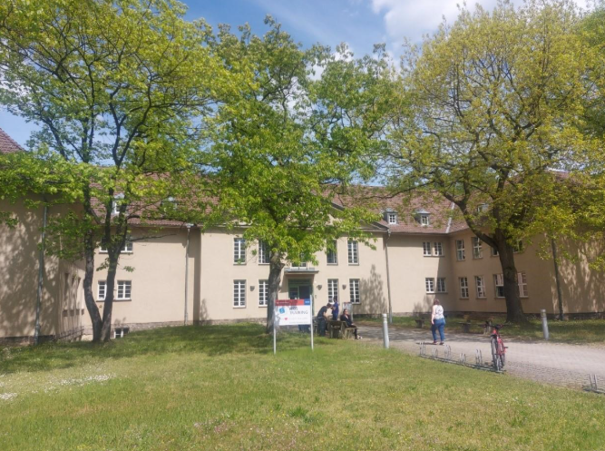
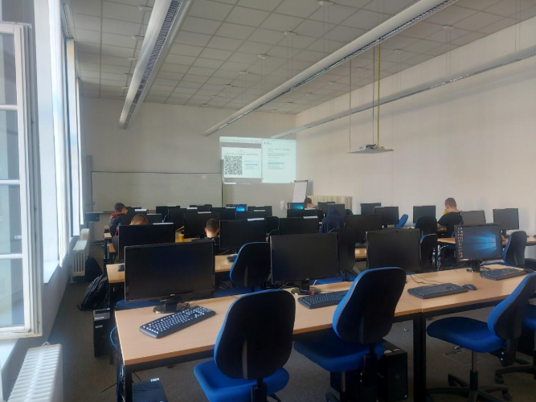

Erasmus+ program
Németország és Ausztria
Az Erasmus+ program keretében a 10. és 11. évfolyamban lehetőségem nyílt szakmai tapasztalatot szerezni két különböző helyen is: Drezdában (Németország) és Steyrben (Ausztria). A program során nemzetközi munkakörnyezetben szerezhettem tapasztalatot, ahol betekintést kaptam a helyi munkaszervezésbe, új szakmai módszereket ismerhettem meg, és fejleszthettem a kommunikációs, problémamegoldó és csapatmunkához kapcsolódó készségeimet. Fejlődött az alkalmazkodóképességem, bővült a nyelvtudásom. Ezek a mobilitások egyébként 2-2 hetesek voltak.
A külföldi szakmai gyakorlat nemcsak szakmai, hanem személyes fejlődést is hozott számomra – nyitottabb, magabiztosabb és önállóbb lettem.
A munka mellett természetesen nem maradhattak el a szabadidős tevékenységek, kirándulások. Itt megemlíteném, hogy minden nap meleg vacsorát főztünk közösen, a szálláson elhelyezkedő kiskonyhában, így a megélhetési készségünk is fejlődött.

